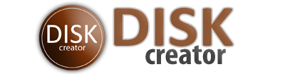

 |
|
Лицензионное соглашение
Перед использованием программы DISK Creator, пожалуйста, ознакомьтесь с лицензионным соглашением. Используя программу, вы соглашаетесь со следующим: 1. DISK Creator свободно распространяемая программа, которая может использоваться в любых не коммерческих целях. 2. Распространение DISK Creator осуществляется только с согласием автора программы и владельца сайта dsoft88.spaces.live.com. Программа может распространятся только в электронном виде. Распространение программы через другие сайты или в любой другой форме без разрешения автора запрещено. 3. DISK Creator распространяется "как есть", поэтому автор не несёт никакой ответственности за убытки (повреждения), которые может нанести программа DISK Creator. 4. DISK Creator - это защищённый авторским правом материал, принадлежащий Ерёмину Андрею aka Developer. Вы не можете декомпиллировать, копировать или иначе перепроектировать эту программу. Вы не можете включать контент DISK Creator в своём программном обеспечении без разрешения автора. Вы не можете изменять DISK Creator любым способом или создавать новую программу инсталляции для него. Copyright (C) 2009-2010, Ерёмин Андрей aka Developer |